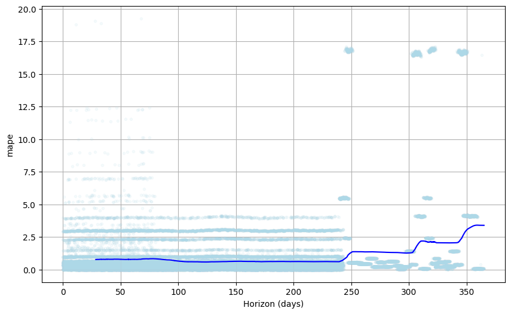
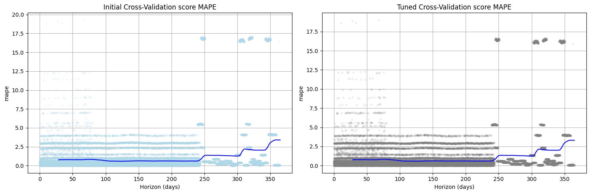
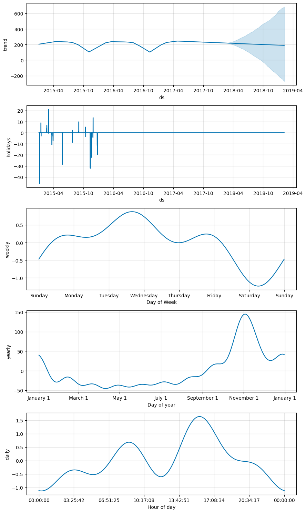
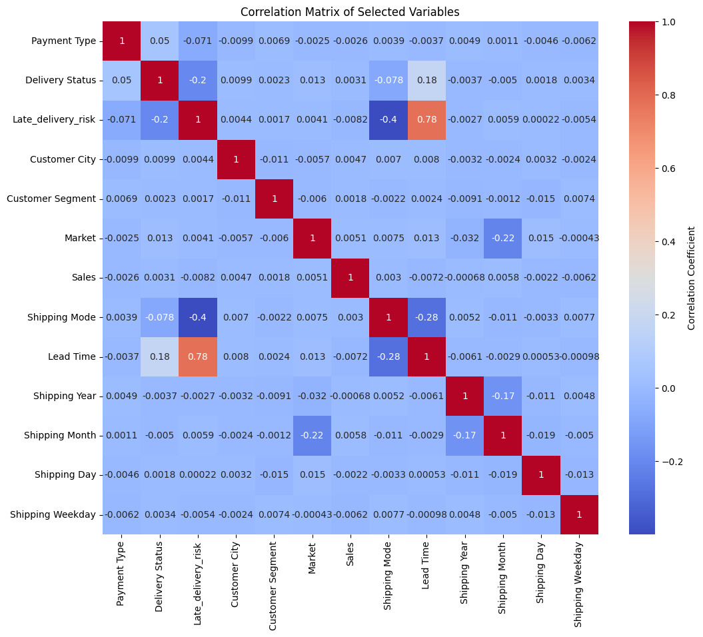
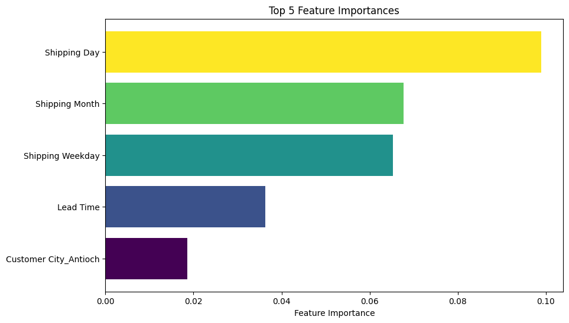

Navigating the ever-shifting landscape of customer demand is a core challenge that supply chain professionals face. Supply chain professionals often combine their expert intuition with some basic statistical techniques to infer the demand for products based on historical data. This process is relatively straightforward when dealing with smaller product categories and stable demand patterns. However, As businesses grow and encounter larger product categories with constantly shifting consumer demands, this traditional demand forecasting approach may not scale.
In this notebook, we will explore a more modern and scalable alternative – a data-driven, programmatic approach to demand forecasting. We will build a demand forecasting model with Python. We will also use this model for inventory optimization, covering concepts like reorder points, safety stock, and economic order quantity (EOQ).
Throughout this project, we will address two key business questions:
What is the demand forecast for the top-selling product in the next 24 months?
What is the optimal inventory level for the product?
Join me on this exploration as we seek answers, and feel free to share your thoughts and feedback on my approach.
You can find the source code for this project at my github page. You can also find the Jupyter notebook and the dataset on my kaggle page.
×
Executive Summary
After building and testing the demand forecasting model, we discovered trends, seasonalities and holiday effects on the top-selling product based on the dataset provided we also found the optimal inventory policy for the top-selling product:
Given the zero variance observed in the product price, The Demand for the product Card ID 365 is expected to remain fairly stable within the next two years with cyclical dips in sales within the third quarter of each year(2015 and 2016). it might be worth looking into these top predictors of demand outcomes to control the dips and ultimately improve sales outcomes
The optimal inventory policy for the top-selling product is as follows:
Reorder Point: 3753 units
Economic Order Quantity (EOQ): 35 units
Safety Stock: 2284 units
When the stock level of the top-selling product hits 3753 units, The Company needs to place an order of 35 units with its suppliers.
Inventory management decisions based on these markers will help the company ensure that there is the right amount of inventory of the top-selling product on hand to meet customer demand while minimizing inventory costs.
Project Outline
For this project, I completed the following tasks:
Performed Exploratory Data Analysis.
Cleaned and Prepared the data for modeling.
Conducted Time Series Modeling With Prophet.
Evaluated the model performance.
Interpret the model results and answer the business questions.
Problem Statement
Large product categories and constantly shifting consumer demand patterns introduce a scaling challenge for traditional demand forecasting techniques. There is a need for an approach that reduces the level of guesswork and reduces the avoidable costly outcomes of poor inventory optimizations.
Prerequisites
To follow along you need to have a basic understanding of the following:
Python Programming. You can take a quick introduction to Python by following this tutorial
If you’re already familiar with these concepts, you’re good to go!
Project Dependencies
Show the code
# import project librariesimport pandas as pdimport numpy as np # for linear algebraimport math # for math operations import seaborn as sns # for plotting# handling filesimport os import sys # data preprocessingfrom sklearn.preprocessing import LabelEncoderfrom sklearn.model_selection import train_test_split# Model Building and Fittingfrom sklearn.ensemble import RandomForestClassifierfrom prophet import Prophet# Model Evaluation and Tuningfrom sklearn.metrics import accuracy_score, classification_report, confusion_matrix# visualization librariesimport seaborn as snsimport matplotlib.pyplot as pltimport matplotlib.pyplot as plt # for plottingimport squarify # for tree maps
Exploratory Data Analysis
The working dataset contains entries of customer demand information The data contains 53 features (columns)
To understand the data, let’s perform some exploratory data analysis. We will use the following techniques:
Visual inspection of data.
Exploratory Data Visualizations. (Univariate and Bivariate)
To explore the spread of the data, we will use the describe() method to get the summary statistics of the data.
# retrieve the number of columns and rowsdf.describe()
Days for shipping (real)
Days for shipment (scheduled)
Benefit per order
Sales per customer
Late_delivery_risk
Category Id
Customer Id
Customer Zipcode
Department Id
Latitude
...
Order Item Quantity
Sales
Order Item Total
Order Profit Per Order
Order Zipcode
Product Card Id
Product Category Id
Product Description
Product Price
Product Status
count
180519.000000
180519.000000
180519.000000
180519.000000
180519.000000
180519.000000
180519.000000
180516.000000
180519.000000
180519.000000
...
180519.000000
180519.000000
180519.000000
180519.000000
24840.000000
180519.000000
180519.000000
0.0
180519.000000
180519.0
mean
3.497654
2.931847
21.974989
183.107609
0.548291
31.851451
6691.379495
35921.126914
5.443460
29.719955
...
2.127638
203.772096
183.107609
21.974989
55426.132327
692.509764
31.851451
NaN
141.232550
0.0
std
1.623722
1.374449
104.433526
120.043670
0.497664
15.640064
4162.918106
37542.461122
1.629246
9.813646
...
1.453451
132.273077
120.043670
104.433526
31919.279101
336.446807
15.640064
NaN
139.732492
0.0
min
0.000000
0.000000
-4274.979980
7.490000
0.000000
2.000000
1.000000
603.000000
2.000000
-33.937553
...
1.000000
9.990000
7.490000
-4274.979980
1040.000000
19.000000
2.000000
NaN
9.990000
0.0
25%
2.000000
2.000000
7.000000
104.379997
0.000000
18.000000
3258.500000
725.000000
4.000000
18.265432
...
1.000000
119.980003
104.379997
7.000000
23464.000000
403.000000
18.000000
NaN
50.000000
0.0
50%
3.000000
4.000000
31.520000
163.990005
1.000000
29.000000
6457.000000
19380.000000
5.000000
33.144863
...
1.000000
199.919998
163.990005
31.520000
59405.000000
627.000000
29.000000
NaN
59.990002
0.0
75%
5.000000
4.000000
64.800003
247.399994
1.000000
45.000000
9779.000000
78207.000000
7.000000
39.279617
...
3.000000
299.950012
247.399994
64.800003
90008.000000
1004.000000
45.000000
NaN
199.990005
0.0
max
6.000000
4.000000
911.799988
1939.989990
1.000000
76.000000
20757.000000
99205.000000
12.000000
48.781933
...
5.000000
1999.989990
1939.989990
911.799988
99301.000000
1363.000000
76.000000
NaN
1999.989990
0.0
8 rows × 29 columns
Click to see some Notable Observation of the Data
Aproximately 55% of orders had late delivery risks.
Aproximately 75% of products cost $199.99
All the products are available.
75% of customers bought goods worth at least $247.40
Further inspection of the data will help us understand the data better.
Data Preprocessing
we will focus on historical sales data, and product attributes like; stock level, and product category, we will also analyze the impact of other variables that contribute to demand patterns including geographic factors, customer segments and lead time.
Preprocessing Tasks
Drop irrelevant columns
Drop rows with missing values
Create new features
Convert categorical features to numerical features
Based on the above, we will drop the majority of the columns that are not relevant for forecasting the demand and extract new features from the existing columns
Drop Irrelevant Columns
Show the code
# drop irrelevant columnsdef drop_columns(df, columns_to_drop):try: df = df.drop(columns=columns_to_drop)print(f"{len(columns_to_drop)} columns dropped successfully. Number of columns remaining: {len(df.columns)}")return dfexceptKeyErroras e:print(f"""Column(s): {e} not found in dataframe. No columns dropped. Please Check that the column names are correct.""")return df# Specify the columns to keepcolums_to_keep = ['Days for shipping (real)', 'Days for shipment (scheduled)','Customer Country','Sales per customer','Delivery Status', 'Late_delivery_risk', 'Customer City','Customer Segment','Sales','Shipping Mode','Type', 'Product Card Id','Customer Zipcode', 'Product Category Id', 'Product Name', 'Product Price','Market', 'Product Status','shipping date (DateOrders)',]# Specify the columns to dropcolumns_to_drop = [col for col in df.columns if col notin colums_to_keep ]df = drop_columns(df, columns_to_drop)
34 columns dropped successfully. Number of columns remaining: 19
Drop Rows with Missing Values
# drop customer Zip code.df = df.drop(columns=['Customer Zipcode'])
A Quick Spot Check for Missing Values
### Check for Missing valuesdef check_null_values(df): null_values = df.isnull().sum()if null_values.sum() ==0:print("No null values found ✅")else:print("⚠️ Null values found in the following columns:")for column, null_count in null_values.iteritems():if null_count >0:print(f"{column}: {null_count}")# Use the functioncheck_null_values(df)
No null values found ✅
In the code above, df.isnull().sum() returns a Series where the index is the column names and the values are the count of null values in each column. If the sum of these counts is 0, it means there are no null values in the DataFrame, so it prints “No null values found”. Otherwise, it iterates over the Series and prints the column names and counts of null values.
Create New Features
The dataset contains a shipping date column which is a DateTime object from which we can extract Month, Year, Day and Day of Week that can be useful in our analysis.
Month - to capture the months per sale.
Year - to capture the year per sales.
Day - to capture the day per sales.
Day of Week - to capture the day of the week per sales.
we need to also create a new Lead Time column which is the difference between the Days for shipment (scheduled) and the Days for shipping (real). This will help us understand the impact of lead time on demand.
Show the code
# Create month, Year, Day, and Weekday columns from Shipping Datedef extract_date_parts(df, date_column, prefix):try: df[date_column] = pd.to_datetime(df[date_column]) df[f'{prefix} Year'] = df[date_column].dt.year df[f'{prefix} Month'] = df[date_column].dt.month df[f'{prefix} Day'] = df[date_column].dt.day df[f'{prefix} Weekday'] = df[date_column].dt.weekday# verify and notify that the columns have been creatediff'{prefix} Year'in df.columns andf'{prefix} Month'in df.columns andf'{prefix} Day'in df.columns andf'{prefix} Weekday'in df.columns:print(f"✅ Success! Columns Created: {prefix} Year, {prefix} Month, {prefix} Day, and {prefix} Weekday")return dfelse:print("Error creating columns. Please check that the date column name is correct.")exceptExceptionas e:print(f"Error creating columns: {e}")return df# Add Lead Time Feature from Days for shipping (real) and Days for shipment (scheduled)df['Lead Time'] = df['Days for shipping (real)'] - df['Days for shipment (scheduled)']# Use the function to extract date partsdf = extract_date_parts(df, 'shipping date (DateOrders)', 'Shipping')
Now we have 23 columns and 180519 entries (rows) in the dataset.
Data Encoding
The nature of categorical data makes it unsuitable for future analysis. For instance, machine learning models can’t work with categorical values for customer origins like UK, USA, France, etc. We will convert these categorical values to numerical values using the LabelEncoder from the sklearn library.
I will also perform a one-hot encoding technique on categorical features for future machine learning modeling tasks.
I wrote a prepare_data() function that returns two preprocessed dataframes: one that is encoded using a label encoder function and the other encoded using one hot encoding technique.
You can learn about encoding techniques for categorical variables here
Show the code
# Select top selling producttop_product = df['Product Card Id'].value_counts().index[0]# get top product IDprint(f"Filtering and Encoding Dataset for Top Product ID: {top_product}")from sklearn.preprocessing import LabelEncoderdef prepare_data(df, product_card_id, categorical_cols, columns_to_drop):""" Prepare a DataFrame for bivariate analysis and machine learnin g by applying label encoding and one-hot encoding to categorical columns and dropping specified columns. Parameters: df (pandas.DataFrame): The original DataFrame. product_card_id (int): The product card ID to filter the DataFrame on. categorical_cols (list of str): The names of the categorical columns to apply encoding to. columns_to_drop (list of str): The names of the columns to drop from the DataFrame. Returns: pandas.DataFrame: The label encoded DataFrame for bivariate analysis. pandas.DataFrame: The one-hot encoded DataFrame for machine learning. """try: df_copy = df[df['Product Card Id'] == product_card_id].copy() # create a copy# label encoding label_encoder = LabelEncoder() df_label_encoded = df_copy.copy()# Apply label encoding to categorical variables in placefor col in categorical_cols: df_label_encoded[col] = label_encoder.fit_transform(df_label_encoded[col])# Drop specified columns df_label_encoded = df_label_encoded.drop(columns=columns_to_drop)# one-hot encoding df_one_hot_encoded = pd.get_dummies(df_copy, columns=categorical_cols)# Drop specified columns df_one_hot_encoded = df_one_hot_encoded.drop(columns=columns_to_drop)print("Data Encoding successful. ✅")return df_one_hot_encoded, df_label_encodedexceptExceptionas e:print(f"Error preparing data: {e}")returnNone, None# Use the function to prepare the data for bivariate analysiscategorical_cols = ['Type', 'Customer Segment', 'Delivery Status', 'Customer City', 'Market','Shipping Mode']columns_to_drop = ['Product Name','Days for shipment (scheduled)', 'Sales per customer', 'Days for shipping (real)','Customer Country', 'shipping date (DateOrders)', 'Product Card Id', 'Product Category Id', 'Product Status', 'Product Price']# drop columns and encode data for correlation martrix and Machine learningonehot_encode_df, label_encode_df = prepare_data(df, top_product, categorical_cols, columns_to_drop)# rename Type column to Payment Typelabel_encode_df = label_encode_df.rename(columns={'Type': 'Payment Type'})onehot_encode_df = onehot_encode_df.rename(columns={'Type': 'Payment Type'})
Filtering and Encoding Dataset for Top Product ID: 365
Data Encoding successful. ✅
Confirm Encoding of Dataset
label_encode_df.dtypes
Payment Type int64
Delivery Status int64
Late_delivery_risk int64
Customer City int64
Customer Segment int64
Market int64
Sales float64
Shipping Mode int64
Lead Time int64
Shipping Year int32
Shipping Month int32
Shipping Day int32
Shipping Weekday int32
dtype: object
# validate the one-hot encodingonehot_encode_df.dtypes
Late_delivery_risk int64
Sales float64
Lead Time int64
Shipping Year int32
Shipping Month int32
...
Market_USCA bool
Shipping Mode_First Class bool
Shipping Mode_Same Day bool
Shipping Mode_Second Class bool
Shipping Mode_Standard Class bool
Length: 589, dtype: object
Finally…Data Preprocessing Completed!!
The dataset is now ready for further analysis and modeling. we can now proceed to conduct exploratory data visualizations to understand the distribution of the data better.
Exploratory Data Visualizations
To highlight the distributions of the individual variables as well as the relationship between the variables and the target variables, I used the following techniques:
Univariate Analysis
Exploratory Time Series Analysis
Univariate Analysis
Univariate analysis is the simplest form of data analysis where the data being analyzed contains only one variable. Since it’s a single variable, it doesn’t deal with causes or relationships. The main purpose of univariate analysis is to describe the data and find patterns that exist within it.
Visualizing the Distribution of the Dataset
Show the code
fig, axes = plt.subplots(nrows=3, ncols=3, figsize=(15, 15))fig.suptitle('Distribution Plots for Selected Variables', fontsize=16)# Create a copy of the DataFramedf_copy = df.copy()# Plotting the top ten products per Product Card Idsns.countplot(data=df_copy, x='Product Card Id', color='blue', ax=axes[0, 0], order=df_copy['Product Card Id'].value_counts().iloc[:10].index)axes[0, 0].set_title('Distribution of Top Ten Product Id')axes[0, 0].set_xlabel('Product Card Id')axes[0, 0].set_ylabel('Count')# Plotting Value of sales in dollarssns.histplot(data=df_copy, x='Sales', kde=True, color='salmon', bins=30, linewidth=2, ax=axes[0, 1])axes[0, 1].set_title('Distribution of Sales')axes[0, 1].set_xlabel('Sales value in Dollars')axes[0, 1].set_ylabel('Frequency')# Plotting Sales Value per customersns.histplot(data=df_copy, x='Sales per customer', bins=30, kde=True, linewidth=2, color='lightblue', ax=axes[0, 2])axes[0, 2].set_title('Distribution of Sales per Customer')axes[0, 2].set_xlabel('Sales per Customer')axes[0, 2].set_ylabel('Frequency')# Ploting the distribution of Product Pricesns.histplot(data=df_copy, x='Product Price', bins=30, kde=True, color='lightgreen', linewidth=2, ax=axes[1, 0])axes[1, 0].set_title('Distribution of Product Price')axes[1, 0].set_xlabel('Product Price')# ploting a tree map for Customer Segmentsquarify.plot(sizes=df_copy['Customer Segment'].value_counts(), label=df_copy['Customer Segment'].value_counts().index, color=sns.color_palette("Set3"), ax=axes[1, 1])axes[1, 1].set_title('Distribution of Customer Segment - Treemap')# ploting a tree map for Top Ten Product Category Idsquarify.plot(sizes=df_copy['Product Category Id'].value_counts().iloc[:10], label=df_copy['Product Category Id'].value_counts().iloc[:10].index, color=sns.color_palette("Set2"), ax=axes[1, 2])axes[1, 2].set_title('Distribution of Top Ten Product Category Id - Treemap')# Plotting the distribution of Delivery Statussns.countplot(data=df_copy, x='Delivery Status', color='pink', ax=axes[2, 0])axes[2, 0].set_title('Distribution of Delivery Status')axes[2, 0].set_xlabel('Delivery Status')axes[2, 0].set_ylabel('Count')# Plotting the distribution Payment Type with stacked bar chartdf_copy.groupby(['Type'])['Type'].count().plot(kind='bar', stacked=True, ax=axes[2, 1])axes[2, 1].set_title('Distribution of Payment Type')axes[2, 1].set_xlabel('Payment Type')axes[2, 1].set_ylabel('Count')# Plotting the Distribution of top ten Customer Countrysns.countplot(data=df_copy, x='Customer Country', color='orange', ax=axes[2, 2], order=df_copy['Customer Country'].value_counts().iloc[:10].index)axes[2, 2].set_title('Distribution of Customer Country')axes[2, 2].set_xlabel('Customer Country')axes[2, 2].set_ylabel('Count')# Adjust layoutplt.tight_layout(rect=[0, 0.03, 1, 0.95])# Show the plotsplt.show()
Click to Read My Observations!
The Top Selling Product ID is 365 which corresponds to a product name: Perfect Fitness Perfect Rip Deck this indicates a fast-moving product. I will focus the demand forecasting process on this product going forward
The distribution of Sales Value and Sales per customer are both positively skewed with a long tail. This indicates that the majority of sales are for low-value products. This is an interesting insight because it may suggest that the majority of customers are price-sensitive.
The distribution of Product Price is also positively skewed with a long tail. This means that the majority of products are low-value products.
The distribution of Customer Segment indicates that the majority of customers are from the consumer segment.
NOTE: Based on the insight from the univariate analysis, The rest of the analysis and forecasting will focus on the top-selling Product Card Id (365 ‘Perfect Fitness Perfect Rip Deck’)
Exploratory Time Series Visualisation
To understand the demand patterns of the top-selling product, let’s create a time series heatmap to visualize the demand patterns of the top-selling product over time.
Time Series HeatMap of The Demand
Show the code
import seaborn as snsimport matplotlib.pyplot as pltimport calendar# Extract shipping date (DateOrders) and Sales columnsdf_heatmap = df[['shipping date (DateOrders)', 'Sales']]# Assuming 'df' is your original dataframedf_heatmap.set_index('shipping date (DateOrders)', inplace=True)resampled_df = df_heatmap.resample('M').sum() # Resample to yearly frequency# Set x-axis ticks to represent months and yearsmonth_labels = [calendar.month_abbr[m.month] +'-'+str(m.year) for m in resampled_df.index]# Plot the heatmapplt.figure(figsize=(20, 10))sns.heatmap(resampled_df.T, cmap='YlGnBu', cbar_kws={'label': 'Sales'})plt.xticks(ticks=range(len(month_labels)), labels=month_labels, rotation=80, ha='right')plt.title('Time Series Heatmap of Sales (Aggregated by Month)')plt.xlabel('Month and Year')plt.show()
Judging from consistency in the shades of the heatmap, we can see that the demand for the top-selling product is fairly stable over time. However, it is interesting to note that the number of sales recorded for the first quarters of 2015, 2016 and 2017 remained consistent however in 2018 the number of sales recorded in the first quarter dipped significantly. This is an interesting insight that we can explore further.
Next, Let’s use the Prophet library to model the demand for the top-selling product. This will help us understand the cyclical patterns in the demand for the top-selling product
Forecasting Demand with Prophet
Prophet is a forecasting tool developed by Facebook. It is designed for analyzing time series data that display patterns on different time scales such as yearly, weekly, and daily. It also has advanced capabilities for modeling the effects of holidays on a time series and implementing custom seasonalities. see the documentation here
Show the code
# import prophetfrom prophet import Prophetprophet_df = df.copy()prophet_df = prophet_df.rename(columns={'shipping date (DateOrders)': 'ds', 'Sales': 'y'})# Add custom Puerto Rico holidays# Read the CSV fileholidays_df = pd.read_csv('data/puertorican_holidays.csv')# Rename the 'Date' column to 'ds' and the 'Name' column to 'holiday'holidays_df = holidays_df.rename(columns={'Date': 'ds', 'Name': 'holiday'})# Drop the 'Type' column as it's not neededholidays_df = holidays_df.drop(columns=['Type'])# Add 'lower_window' and 'upper_window' columnsholidays_df['lower_window'] =0holidays_df['upper_window'] =1# Convert 'ds' to DateTimeholidays_df['ds'] = pd.to_datetime(holidays_df['ds'])# Create a Prophet instance and provide the holidays DataFrameprophet = Prophet(holidays=holidays_df)prophet.fit(prophet_df)# Create a DataFrame with future dates for forecastingfuture = prophet.make_future_dataframe(periods=365, freq='D')# Generate forecastsforecast = prophet.predict(future)
16:55:01 - cmdstanpy - INFO - Chain [1] start processing
17:49:07 - cmdstanpy - INFO - Chain [1] done processing
The code above uses the Prophet library to model the demand for the top-selling product. The model is trained on the Sales and Shipping Date columns. The model is then used to forecast the demand for the top-selling product over the next 365 days.
The code also included Puerto Rican holidays to account for the impact of holidays on the demand for the top-selling product. This is important because holidays can have a significant impact on demand patterns.
You might wonder why Puerto Rican holidays were included in the model. From the univariate analysis conducted earlier, we discovered that most of the orders were coming from Puerto Rico. The forecast variable now contains the forecasted values for the top-selling product. we will work with the variable later but for now, let’s evaluate the accuracy of our prophet model
Evaluating the Accuracy of the Time Series Forecast
To determine the accuracy of the prophet model, we will use the cross_validationa() function provided by Prophet
18:01:01 - cmdstanpy - INFO - Chain [1] start processing
18:07:08 - cmdstanpy - INFO - Chain [1] done processing
The cross_validation() function performs cross-validation on the model. It trains the model on a subset of the data and then evaluates the model on the remaining data. This is a good way to evaluate the accuracy of the model. The initial parameter specifies the size of the training set. The period parameter specifies the frequency of the forecast.
Let’s visualize the performance of the model
# Plot MAPEfrom prophet.plot import plot_cross_validation_metric# set fig sizeplt.figure(figsize=(9, 6))fig = plot_cross_validation_metric(df_cv, metric='mape')fig.get_axes()[0].get_lines()[0].set_markerfacecolor('#ADD8E7') # Change color of the dotsfig.get_axes()[0].get_lines()[0].set_markeredgecolor('#ADD8E7') # Change color of the dot edges
<Figure size 900x600 with 0 Axes>

The forecast has lower MAPE (Mean Absolute Percentage Error) values for horizons within the 200-day range however the accuracy drops for horizons beyond 250 days. This suggests that the model is making more errors at periods beyond 250 days.
The model will be most useful to stakeholders if it can forecast demand beyond 250 days with a lower percentage of errors. Exposing the model to more historical data may help lower the MAPE significantly. nonetheless, let’s explore if there are opportunities to improve the accuracy by finding the best combinations of hyperparameters for the prophet model. I will use a hyperparameter tuning technique to try to optimize the model’s performance.
Finding the Best Hyperparameter Combination for Lower MAPE
Show the code
from sklearn.model_selection import ParameterGrid# Assuming prophet_df is your DataFrame with 'ds' and 'y' columnsprophet_df = df.copy()prophet_df = prophet_df.rename(columns={'shipping date (DateOrders)': 'ds', 'Sales': 'y'})# Specify hyperparameter values to tryparam_grid = {'seasonality_mode': ["additive", 'multiplicative'],'seasonality_prior_scale': [1, 5, 10, 20],'holidays_prior_scale': [5, 10, 20, 25],'changepoint_prior_scale': [0.005, 0.01, 0.05, 0.1]}# Generate all combinations of hyperparameters using ParameterGridparam_combinations = ParameterGrid(param_grid)
The code above uses the ParameterGrid function from the sklearn library to create a grid of hyperparameters. The grid contains different combinations of hyperparameters for the prophet model.
On the other hand, the code below uses the cross_validation() function to evaluate the accuracy of the model for each combination of hyperparameters. The code then selects the combination of hyperparameters that results in the lowest MAPE.
Show the code
from itertools import product# Store results in a dictionaryresults = {}print(f"trying all {len(param_combinations)} hyperparameter combinations")# Generate all combinations of hyperparametersparam_combinations =list(product(*param_grid.values()))for params in param_combinations:# Create a Prophet instance with current hyperparameter values prophet = Prophet(**dict(zip(param_grid.keys(), params)))# Fit the model prophet.fit(prophet_df)# Perform cross-validation df_cv = cross_validation(model=prophet, initial='730 days', period='365 days', horizon='365 days')# Calculate performance metrics df_metrics = performance_metrics(df_cv, rolling_window=0)# Store metrics in the results dictionary results[params] = df_metrics['mape'].mean()
NOTE: The code took a very long time to complete. It tried 128 different combinations of hyperparameters and the best model was the one with the lowest MAPE value.
The results are in! The best model had the following hyperparameters:
# Find the hyperparameters with the lowest RMSEbest_hyperparams =min(results, key=results.get)print(f"Best Hyperparameters: {dict(zip(param_grid.keys(), best_hyperparams))}")
Best Hyperparameters: {'seasonality_mode': 'additive', 'seasonality_prior_scale': 1, 'holidays_prior_scale': 5, 'changepoint_prior_scale': 0.005}
Now let’s rebuild the model with the best hyperparameters and evaluate the model’s performance.
tuned_prophet = Prophet(holidays=holidays_df, seasonality_mode='additive', seasonality_prior_scale=1, holidays_prior_scale=5, changepoint_prior_scale=0.005)# fit the modeltuned_prophet.fit(prophet_df)# Create a DataFrame with future dates for forecastingfuture = tuned_prophet.make_future_dataframe(periods=365, freq='D')# Generate forecastsnew_forecast = tuned_prophet.predict(future)
19:27:47 - cmdstanpy - INFO - Chain [1] start processing
19:53:04 - cmdstanpy - INFO - Chain [1] done processing
20:34:36 - cmdstanpy - INFO - Chain [1] start processing
20:40:55 - cmdstanpy - INFO - Chain [1] done processing
let’s compare the accuracy of the model before and after hyperparameter tuning.
Show the code
fig, axs = plt.subplots(1, 2, figsize=(15, 9))# Plot the first cross-validation metricfig1 = plot_cross_validation_metric(df_cv, metric='mape', ax=axs[0])fig1.get_axes()[0].get_lines()[0].set_markerfacecolor('#ADD8E7') # Change color of the dotsfig1.get_axes()[0].get_lines()[0].set_markeredgecolor('#ADD8E7') # Change color of the dot edges# add titleaxs[0].set_title('Initial Cross-Validation score MAPE')# Plot the second cross-validation metricfig2 = plot_cross_validation_metric(tuned_df_cv, metric='mape', ax=axs[1])fig2.get_axes()[0].get_lines()[0].set_markerfacecolor('#ADD8E7') # Change color of the dotsfig2.get_axes()[0].get_lines()[0].set_markeredgecolor('#ADD8E9') # Change color of the dot edges# add titleaxs[1].set_title('Tuned Cross-Validation score MAPE')plt.tight_layout()plt.show()

Not Exactly the outcome I was expecting but the tuned model’s performance remains consistent with the previous model. This may suggest that the model is not sensitive to the hyperparameters. Nonetheless, the model is still useful for forecasting demand for the top-selling product.
Forecast Results
As indicated earlier, the forecast variable contains the forecasted values of our Sales time series. Based on this forecast we will calculate the optimal inventory policy for this specific product.
The forecast variable is a dataframe that contains the following columns:
forecast.head(2)
ds
trend
yhat_lower
yhat_upper
trend_lower
trend_upper
American Citizenship Day
American Citizenship Day_lower
American Citizenship Day_upper
Christmas Day
...
weekly
weekly_lower
weekly_upper
yearly
yearly_lower
yearly_upper
multiplicative_terms
multiplicative_terms_lower
multiplicative_terms_upper
yhat
0
2015-01-03 00:00:00
189.503452
66.035120
371.245609
189.503452
189.503452
0.0
0.0
0.0
0.0
...
-1.288207
-1.288207
-1.288207
33.801001
33.801001
33.801001
0.0
0.0
0.0
220.974183
1
2015-01-03 03:30:00
189.646216
58.800553
399.717455
189.646216
189.646216
0.0
0.0
0.0
0.0
...
-1.373629
-1.373629
-1.373629
33.618634
33.618634
33.618634
0.0
0.0
0.0
221.460580
2 rows × 73 columns
Before calculating the optimal inventory policy, let’s visualize the forecasted sales data. To have a feel for the seasonalities and cycles in the forecasted sales data
Visualizing Forecasted Sales
import warnings# Ignore the specific FutureWarningwarnings.filterwarnings("ignore", category=FutureWarning)# Plot the forecasttuned_prophet.plot_components(new_forecast)

Business Question #1
What is the demand forecast for the top selling product in the next 24 months?
The sales trend between 2015 and 2017 marks a cycle where sales for the product remained relatively stable during the second and third quarters of each year and then dipped slightly in October with a sharp increase between November and December.
The forecasted sales for the next 24 months, on the other hand, indicate a very stable demand pattern.
The zero variance observed in the product price may account for the relatively stable sales pattern forecasted for 2018 and 2019. It might also be worth investigating the factors that may account for the cyclical dips between 2015 and 2017
We can also observe the impact of the Puerto Rican holidays on the forecasted sales.
Finding Optimal Inventory Policy Based on Forecasted Demand
Now that we have forecasted the demand for the top-selling product, we can use the forecasted demand to calculate the optimal inventory policy for the product.
Finding the optimal inventory policy will help us determine the Reorder Point, safety stock, and Economic Order Quantity(EOQ) for the product. These markers will help us ensure that we have the right amount of inventory on hand to meet customer demand while minimizing inventory costs.
Re Order Point
The reorder point is the inventory level at which we should reorder more stock. ROP is calculated as the product of the average sales per day and the lead time (also referred to as Lead Time Demand) plus the Safety stock.
\[ \text{Lead Time Demand} = \text{Average Sales Per Day} \times \text{Lead Time} \]
NOTE: It is important to state the difference between the downstream and upstream lead time.
The Lead Time with regards to the reordering point is the time it takes for a product to be delivered by upstream supply chain manufacturers to the store’s warehouse. It is the time between the placement of an order by the store and the receipt of the product.
The current dataset only provides the Days for shipment (scheduled) and the Days for shipping (real) which only helps us determine downstream lead times. The downstream lead time is the time it takes for a product to be delivered to the customer after it has been ordered. This is not the lead time we need to calculate the reorder point.
For the purposes of our analysis we will assume an average upstream Lead time of 7 days
# Extract average forecasted sales per dayaverage_forecasted_sales = new_forecast['yhat'].mean()# Extract the average lead timeaverage_lead_time =7# 7 daysprint(f"Average Lead Time: {average_lead_time}")lead_time_demand = average_forecasted_sales * average_lead_timeprint(f"Lead Time Demand: {lead_time_demand}")
Average Lead Time: 7
Lead Time Demand: 1469.1331793554164
One final piece to the Reorder Point puzzle is the Safety Stock. The safety stock is the extra stock that is kept on hand to mitigate the risk of stockouts due to uncertainties in demand and lead time.
\[ \text{Safety Stock} = (\text{Maximum Daily Sales} \times \text{Maximum Lead Time}) - \text{Lead Time Demand}\]
Let’s also assume that there have been delays from the manufacturer in the past and the maximum lead time is 10 days. That is Three days later than the average order fulfillment timeline
# find maximum daily forecasted salesmax_daily_forecasted_sales = new_forecast['yhat'].max()print(f"Maximum Daily Forecasted Sales: {max_daily_forecasted_sales}")# find maximum lead timemax_lead_time = average_lead_time +3# 3 days delays in delivery than the averageprint(f"Maximum Lead Time: {max_lead_time}")# calculate safety stocksafety_stock = (max_daily_forecasted_sales * max_lead_time) - lead_time_demandprint(f"Safety Stock: {safety_stock}")
Maximum Daily Forecasted Sales: 375.38211369017046
Maximum Lead Time: 10
Safety Stock: 2284.687957546288
Finally, we can calculate the reorder point for the top-selling product.
Putting It All Together
# calculate reorder pointreorder_point = lead_time_demand + safety_stockprint(f"The Optimal Reorder Point for the Top-selling Product is: {reorder_point}")
The Optimal Reorder Point for the Top-selling Product is: 3753.8211369017044
As indicated by the result, the reorder point for the top-selling product is 3753 units, which means that we should reorder more stock when the inventory level reaches 3753 units. This will help us ensure that we have enough stock on hand to meet customer demand while minimizing inventory costs.
Economic Order Quantity (EOQ)
Alternatively, we can use the Economic Order Quantity (EOQ) model to calculate the optimal order quantity for the top-selling product. The EOQ model helps us determine the optimal order quantity that minimizes the total inventory costs.
Unlike the Reorder Point which is concerned with determining the level of inventory at which a new order should be placed to avoid stockouts, EOQ takes into account the costs of ordering (e.g., setup costs) and the costs, of holding inventory (e.g., storage costs, opportunity costs).
The Economic Order Quantity (EOQ) formula is given by:
\[ EOQ = \sqrt{\frac{2DS}{H}} \]
Where:
( D ) is the demand rate (number of units demanded),
( S ) is the ordering cost per order,
( H ) is the holding cost per unit per year.
This formula helps in determining the optimal order quantity that minimizes the total inventory costs.
NOTE: We can figure out the demand rate ( D ) based on the existing data. However, the ordering cost ( S ) and holding cost ( H ) are not provided in the dataset. For our analysis, We will assume that the ordering and holding cost is 10% and 30% of the product price respectively.
Estimating Holding Cost and Ordering Cost
Holding Cost
Holding costs typically include expenses related to storing inventory, such as warehousing, insurance, and security. It also includes the opportunity cost of tying up capital in inventory.
Ordering Cost
Ordering costs are the expenses incurred in the process of ordering and receiving inventory. This includes the cost of preparing and processing purchase orders, receiving and inspecting the goods, and storing and managing the inventory.
# extract the product price of top selling product(product card id:365)product_price = df[df['Product Card Id'] ==365]['Product Price'].iloc[0]print(f"The Product Price is: {product_price}")# calculate holding costH =0.10* product_price# calculate ordering costS =0.30* product_price# calculate forecasted demand rateD = new_forecast['yhat'].mean()print(f"The Demand Rate is: {D}")print(f"The Holding Cost is: {H}")print(f"The Ordering Cost is: {S}")
The Product Price is: 59.99000168
The Demand Rate is: 209.8761684793452
The Holding Cost is: 5.999000168
The Ordering Cost is: 17.997000504
Putting It All Together
EOQ = math.sqrt((2* D * S) / H)print(f"The Economic Order Quantity is: {EOQ}")
The Economic Order Quantity is: 35.48601148165388
Based on the EOQ model, the optimal order quantity for the top-selling product is 35 units. This means that we should order 35 units of the product at a time to minimize the total inventory costs. This will help us ensure that we have the right amount of inventory on hand to meet customer demand while minimizing inventory costs.
Business Question #2
See Angry Jack(from spongebob) being angry about his Massive inventory buildup. soon we will see how he could use our new inventory optimisations.
What is the optimal inventory level for the top selling product?
The optimal inventory policy for the top-selling product is as follows:
Reorder Point: 3753 units
Economic Order Quantity (EOQ): 35 units
Safety Stock: 2284 units
Here’s what Angry Jack should do:
When the stock level of the top-selling product hits 3753 units, He needs to place an order of 35 units with his suppliers.
Inventory management decisions based on these markers will help the company ensure that there is the right amount of inventory of the top-selling product on hand to meet customer demand while minimizing inventory costs.
Bonus: Investigating the Top Predictors of Demand Outcomes
Now that we have forecasted the demand for the top-selling product and calculated the optimal inventory policy, we can investigate the top predictors of demand outcomes. This will help us understand the factors that contribute to demand patterns and identify opportunities to improve sales outcomes.
The top-selling product price has remained fixed throughout the dataset. We can safely rule out the product price as a predictor of demand outcome for the period under review.
Wait….I have a Hypothesis
I have a hunch that Product Lead Time, Customer Segment and some Geographic factors will be top predictors of demand outcomes.
I will test this hypothesis by conducting a feature importance analysis using the Random Forest algorithm.
Let’s Investigate…..
Correlation Analysis
Before we proceed with the feature importance analysis, let’s conduct a correlation analysis to identify the top predictors of demand outcomes.
we will create the correlation matrix using the corr() method and then use the heatmap() function from the seaborn library to visualize the correlation matrix.
We will use the label_encode_df data frame created during the data preprocessing stage.
# correlation analysiscorrelation_matrix = label_encode_df.corr()# plot the correlation matrixplt.figure(figsize=(12, 10))sns.heatmap(correlation_matrix, annot=True, cmap='coolwarm', cbar_kws={'label': 'Correlation Coefficient'})plt.title('Correlation Matrix of Selected Variables')plt.show()

Observation
The Heatmap shows there are no strong correlations between the features and the target variable. This suggests that the demand for the top-selling product is not strongly influenced by any single feature.
Feature Importance Analysis Using Random Forest Regressor Model
The correlation matrix could not identify the top predictors of demand outcomes. We will use the Random Forest algorithm to identify the top predictors of demand outcomes. The Random Forest algorithm is an ensemble learning method that uses multiple decision trees to make predictions. It is a powerful algorithm for feature importance analysis.
We will train a Random Forest Regressor model on the onehot_encode_df data frame and then use the feature_importances_ attribute of the model to identify the top predictors of demand outcomes.
Split the Data for Model Training
Show the code
from sklearn.model_selection import train_test_split# prepare features excluding the saleX_features = onehot_encode_df.drop(columns=['Sales'])# Drop Shipping yearX_features = X_features.drop(columns=['Shipping Year'])# prepare target variabley_target = onehot_encode_df['Sales']# split the data into training and testing setsX_train, X_test, y_train, y_test = train_test_split(X_features, y_target, test_size=0.2, random_state=42)
Train the Random Forest Regressor Model
Show the code
from sklearn.ensemble import RandomForestRegressor# create a random forest regressor modelrf_model = RandomForestRegressor(n_estimators=150, max_depth=10, min_samples_split=2)# fit rf odel to the training datarf_model.fit(X_train, y_train)
In a Jupyter environment, please rerun this cell to show the HTML representation or trust the notebook. On GitHub, the HTML representation is unable to render, please try loading this page with nbviewer.org.
import matplotlib.cm as cm# retrieve the feature importancesfeature_importances = rf_model.feature_importances_# get the top 5 feature importancestop_5_feature_importances = feature_importances.argsort()[-5:]# visualize the top 5 features of importanceplt.figure(figsize=(10, 6))colors = cm.viridis(np.linspace(0, 1, len(top_5_feature_importances)))plt.barh(X_train.columns[top_5_feature_importances], feature_importances[top_5_feature_importances], color=colors)plt.xlabel('Feature Importance')plt.title('Top 5 Feature Importances')plt.show()

Discussion of Results
The feature importance analysis confirms the majority of my hypothesis
We can see that Product Lead Time, and some Geographic factors were among the top predictors of demand outcomes
Customer Segment however was not among the top predictors of demand outcomes. This brings us to the end of our analysis
Congratulations on making it This Far!
Key Takeaways
If you made it this far, I hope you have enjoyed the journey. Here are the key takeaways from this project:
We explored how to build a demand forecasting model with Python.
We used the model for inventory optimization, covering concepts like reorder points, safety stock, and economic order quantity (EOQ).
We discovered trends, seasonalities and holiday effects on the top-selling product based on the dataset provided.
We found the optimal inventory policy for the top-selling product.
How does this method offer enhanced scalability compared to conventional demand forecasting techniques?
The existing data processing steps can easily be adapted to accommodate larger product categories.
Improved speed and accuracy.
Minimized guesswork and enhanced reproducibility for validating forecasts.
Feel free to share your thoughts and feedback on my approach. I am open to learning and improving my skills.